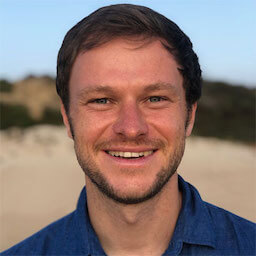
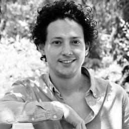

The Global Change Data Lab is a charity in the education sector,
registered in England and Wales (Charity Number 1186433). Our purpose is
to advance education in how global living conditions and the
earth’s environment are changing, through the production and
maintenance of public online resources and related products.
We are focused on solving five big problems.
- Daily news is not enough to know about the world:
we publish data and research to bring attention to large, yet slow
transformative processes (e.g. historical reductions in child mortality)
that are rarely covered by the media.
- To understand how our world is changing we need
statistics: Our mission is to make data about the world
available and understandable to give everyone the research to develop a
worldview that goes beyond anecdotes and single events.
- Academic research is disconnected from public
discourse: Research is often hidden behind paywalls, buried in
spreadsheets, and written for a specialist audience only. We explain and
disseminate important findings that would otherwise be inaccessible to a
general audience.
- Lacking awareness of progress makes us cynical: we
show that in many ways living conditions around the world are getting
better; communicating this enables people to pursue more of what works
and to be motivated to engage with the challenges that we face.
- Professors and teachers need understandable, free, and
up-to-date teaching material on global development: The price
of textbooks is often prohibitively high and especially in developing
countries educators lack relevant material. We prepare our work to be
used as teaching material by everyone without restriction.
Projects
Our World in Data
Our World in Data is a
website that shows how global living conditions and the earth’s
environment are changing. The publication is a collaborative
effort between the researchers of the
Oxford
Martin Programme on Global Development at the University of
Oxford, who are the scientific editors of the website content; and
the non-profit organization Global Change Data Lab, who
publishes and maintains the website.
Sustainable Development Goals Tracker
SDG Tracker presents data across all available indicators from the Our
World in Data database, using
official statistics from the UN and other international organizations. It is the first publication that tracks
global progress towards the SDGs.
Global Change Teaching Hub
On the Global Change
Teaching Hub professors and students find notes, presentation slides,
and charts for teaching and learning about global development.
Other projects
We have a number of smaller projects such as Africa in Data, a tool to
standardize
country names in international statistics, and regularly partner with
media organizations to provide data and research on global change.
Board of Trustees
Sir David Hendry. Professor of Economics, and former Head of Department of Economics,
University of
Oxford, UK.
Professor Wendy Carlin. Professor of Economics, Department of Economics, University
College London,
UK.
Professor Stefano Caria. Assistant Professor of Economics, Department of Economics,
University of
Bristol, UK
Executive Directors

Dr. Max Roser
Senior Research Fellow, Oxford Martin School, University of Oxford,
UK.
Max is the founder and director of Our World in Data. He
began
the project in 2011 and for several years was the sole author, until
receiving funding for the formation of a team. Max’s research
focuses on poverty, global health, and the distribution of incomes.
He is also Programme Director of the Oxford Martin Programme on
Global Development at the University of Oxford, and Co-executive
Director of Global Change Data Lab, the non-profit organization that
publishes and maintains the website and the data tools that make our
work possible.

Dr. Esteban Ortiz-Ospina
Research Fellow, Oxford Martin School, University of Oxford, UK.
Esteban joined us in 2016. He is Senior Researcher and Content
Lead at Our World In Data, as well as executive co-director of
Global Change Data Lab, the non-profit organization that publishes
and maintains the website and the data tools that make our work
possible. Esteban does research on economic development, the
public sector, education, and a wide range of related topics.
Esteban completed his doctoral studies at the University of Oxford
(DPhil Economics).